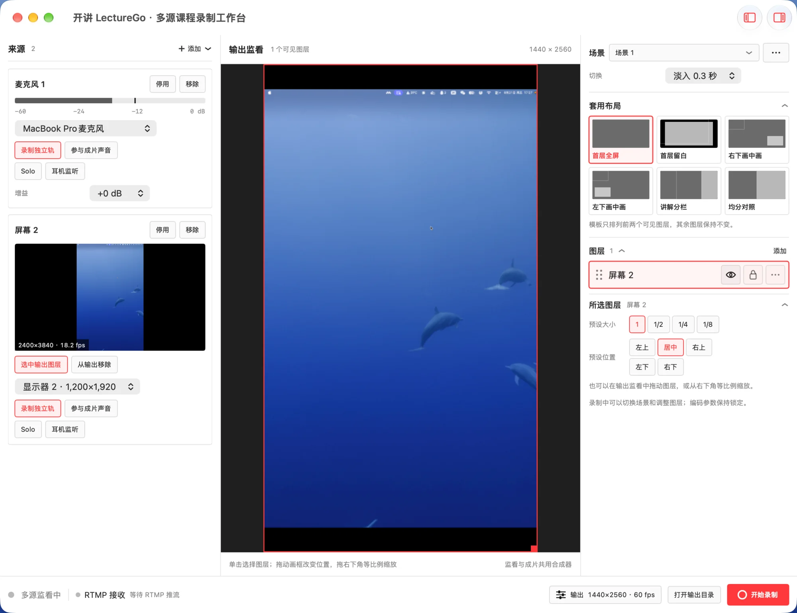
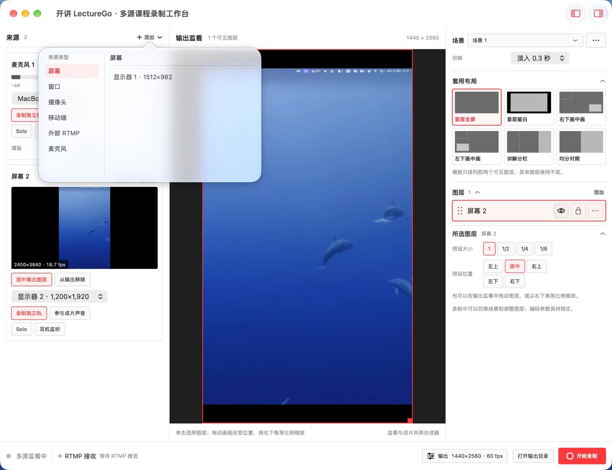
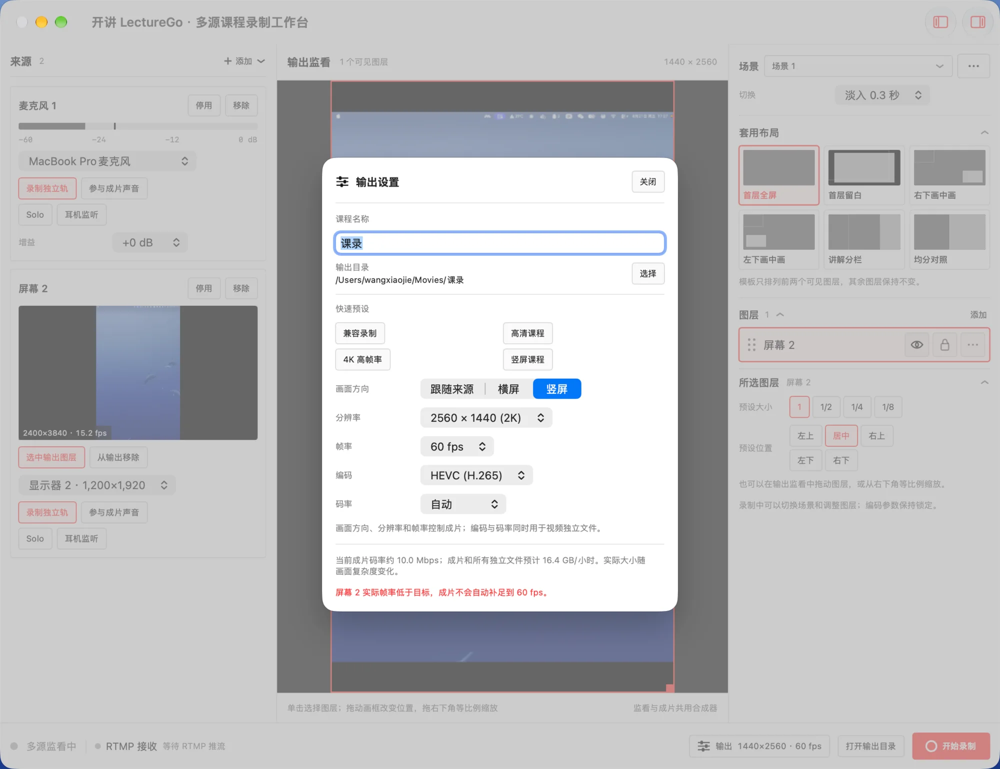

{kind=link}
{kind=link}
Unified multi-source input
Add multiple screens, windows, cameras, Android devices, RTMP streams and microphones at the same time.
Multi-source · Isolated tracks
Bring screens, windows, cameras, Android devices, RTMP and microphones into one workspace. LectureGo records a ready-to-share program while preserving every video source as an ISO file and every sound source as a separate audio track.
Source available for noncommercial use only.

Complete post-production freedom
The mixed video is ready for immediate delivery, while isolated tracks preserve every option for the final cut. Reframe, color or replace each picture independently, and denoise, mix or adjust every sound source on its own.
01-Screen-1-ISO.movV102-Camera-1-ISO.movV201-Screen-1-System.m4aA103-Microphone-1.m4aA2Real application interface
Source connections, live layout and output settings stay together in one course recording workspace.


Built for course recording
Connect sources, build the scene, record the program and preserve post-production media in one workspace.
Add multiple screens, windows, cameras, Android devices, RTMP streams and microphones at the same time.
Move, resize, reorder and lock layers, or apply full-screen, picture-in-picture and split-screen layouts.
Capture the mixed program, every video ISO and every isolated audio track in one synchronized session.
Export DaVinci Resolve XML and OTIO multi-track timelines with aligned media, tracks and recording markers.
Tutorial
Follow the workflow from connecting sources to opening the complete multi-track edit in DaVinci Resolve.
Select Add in the Sources panel, then choose a screen, window, camera, mobile device, external RTMP stream or microphone. Keep an Android device on the same local network as the Mac for discovery.
Add the required video sources as output layers. Move and resize them freely, or apply a full-screen, picture-in-picture or split-screen layout.
Turn on isolated recording for each video or audio source. The scene layout only affects the mixed program and never crops the original source files.
Open Output Settings in the footer and choose orientation, resolution, frame rate, codec and bitrate. Check free disk space, then select Start Recording.
After recording, choose File → Import → Timeline in Resolve. Use Lecture.xml with Resolve 18.1–18.4, or prefer Lecture.otio with Resolve 18.5 and later.
Get started
LectureGo requires macOS 14+ and Swift 5.9+. On first launch, grant screen recording, camera, microphone and local network permissions.
git clone https://github.com/985860612/LectureGo.git
cd LectureGo
./scripts/build-app.sh
open CourseRec.app
Contact and support
Report problems through GitHub Issues or scan the code to contact the author on WeChat. Donations are voluntary and do not grant a commercial license, priority support or a service commitment.
Mention LectureGo in your WeChat request

Support continued development

Support continued development

License boundary
LectureGo is provided under the PolyForm Noncommercial License 1.0.0. Learning, research, experimentation and other noncommercial uses permitted by the license are allowed. Commercial use, commercial integration, paid delivery and for-profit deployment are not licensed.
Read the license